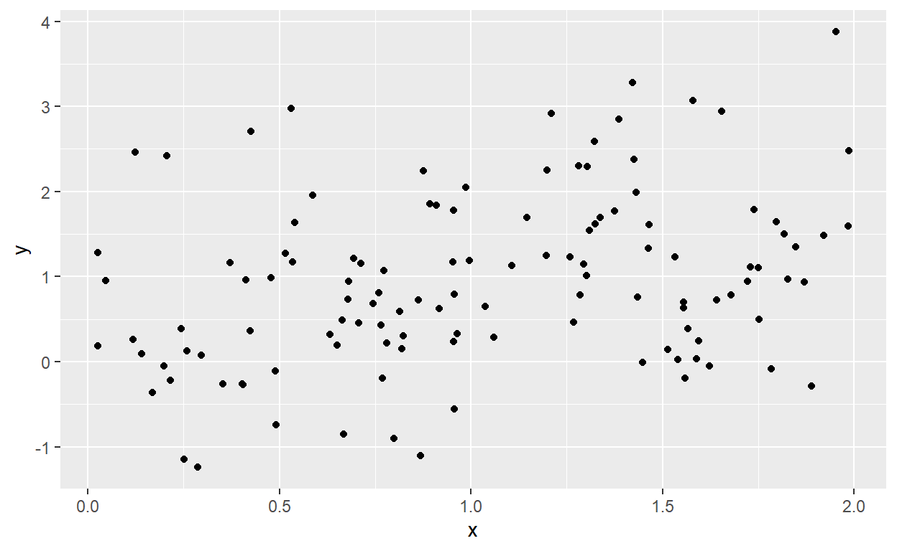

Tutorial 2: Data Management and Visualisation
In this tutorial, we will introduce several functions of the the data.table and ggplot2 packages, which allow data management and plotting, respectively, in an efficient and aesthetically pleasing way. These two packages are not part of the base R, so we need to load them in the beginning of each session (for the very first time, we will need to download these packages from a repository).
One of the comparative advantages of R is in its graphing aesthetics. Currently, the best graphs are plotted via the ggplot2 package. Notably, this package requires that the data are maintained in the data.frame or the data.table format (i.e., if your data are stored as a matrix, you will need to convert it to one of the two aforementioned formats; the conversion is pretty much seamless).
Let’s create a data.table object and observe its few lines:
## y x
## 1: 2.9733299 0.53101733
## 2: 0.6817335 0.74424780
## 3: 1.6917341 1.14570673
## 4: 1.4994931 1.81641558
## 5: -0.2609185 0.40336386
## ---
## 116: 0.1835826 0.02615515
## 117: 1.9894321 1.43113213
## 118: 2.4197029 0.20636847
## 119: 1.8521905 0.89256870
## 120: 2.3040499 1.28020209So, we have generated17 a dataset that contains two variables (x which is a realization of the uniformly distributed random variable, and y which consists of a deterministic component, function of x, and of an idiosyncratic component), stored in two columns, each of length 120. To get a feel whether there is any relationship between these two variables, we can generate a simple scatterplot.

We can augment this plot in a number of different ways. Here we change the point color, add the fitted regression line to the plot, add labels to the figure, and change the background theme:
ggplot(dt,aes(x=x,y=y))+
geom_point(color="coral")+
geom_smooth(method="lm",formula=y~x,se=F,color="darkgray")+
labs(title="A scatterplot with a fitted regression line",
x="Treatment Variable",
y="Outcome Variable",
caption="Caption: in case if needed.")+
theme_classic()
As another example, let’s generate a histogram (of y from the same data):
ggplot(dt,aes(x=y))+
geom_histogram(color="white",fill="coral",binwidth=.5)+
labs(title="A basic histogram")+
theme_classic()It is customary to illustrate a time series via a line plot. So, we add a date column to our dataset, and then plot y in the chronological order:
dt$date <- seq(from=as.Date("2000-01-01"),by="month",along.with=y)
ggplot(dt,aes(x=date,y=y))+
geom_line(color="coral",size=1)+
labs(title="A basic time series plot",
x="Year",
y="Outcome Variable")+
theme_classic()
Notice that prior to sampling we set seed to some value (to
1in this instance). We do so to ensure that we can exactly replicate the sample in the future.↩︎